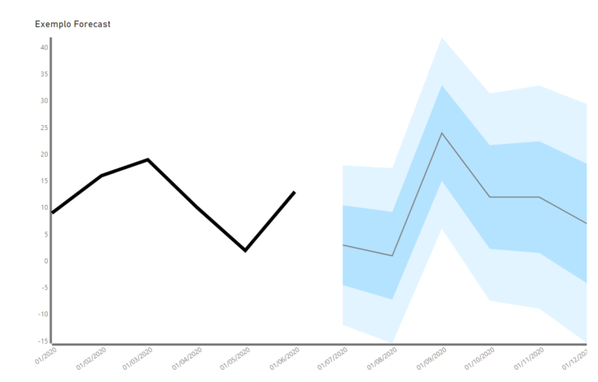
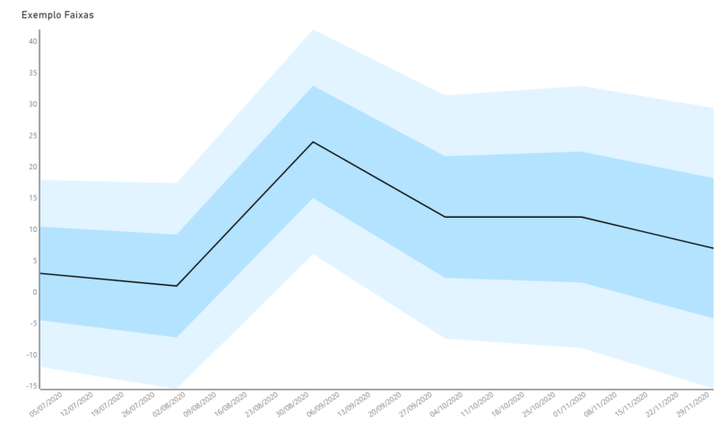

A PowerBI visual to help in forecast visualization
This is Brandviz, a custom visual to help analysts to create graphs that unites confidence intervals and measured lines and forecasted. The visual has some flexibility in editing size and thickness, allowing the user to change features to deliver the best data visualization experience.

Visualize your forecast data The Brandviz is ready to ilustrate your forecast data with one or two confidence interval.
Analise the control intervals Show graphs of one or two brands representing many types of analisys of measures inside intervals, as an example the graph model of industrial control cards.

Check out the Privacy Policy of this visual